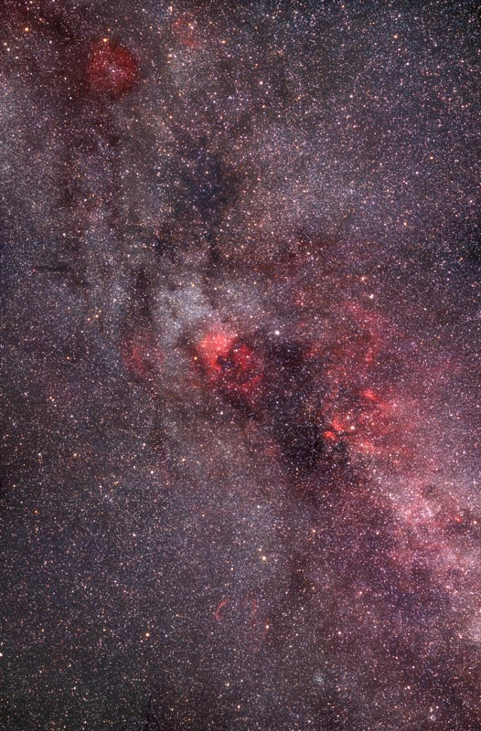
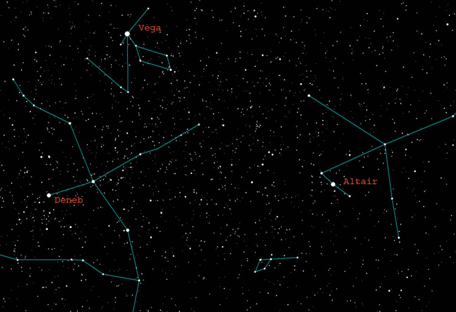

As summer progresses, we can witness one of the most impressive sights the sky has to offer: an arm of the Milky Way Galaxy itself, arching across the entire sky. Throughout antiquity, this ethereal band of light has fascinated viewers — from being called a celestial river to a cosmic bridge between Earth and the heavens.
A 19th-century Finnish poet captured it beautifully:
"They toiled and built a thousand years
In love's all powerful might;
And so the Milky Way was made —
A starry bridge of light…."

What You're Looking At
We live inside the Milky Way Galaxy — a barred spiral of roughly 200–400 billion stars. When we look at the band of light crossing the sky, we're looking sideways through the disc of our own galaxy. The concentration of stars in that direction creates the glowing band we see.
From a dark location like Mary's Peak or Adair County Park, the Milky Way can easily be seen extending from Cassiopeia and Perseus in the north all the way south to Sagittarius. When you look toward Sagittarius, you're looking toward the galactic center — roughly 26,000 light-years away. The star clouds there are the densest and most spectacular part of the band.
Finding It from Light-Polluted Areas
Close to a bright city? Start by finding the Summer Triangle — the three bright stars Vega, Deneb, and Altair, which rise in the east during summer evenings and are usually visible even from the suburbs. The Milky Way runs right through the Summer Triangle. From a dark site, this region appears as a glowing river of unresolved stars. Even from a semi-dark backyard you can often make out a faint brightening of the sky here.

How to Observe It
The Milky Way rewards a multi-instrument approach:
- Naked eye captures the scale — that sweeping arc spanning the whole sky is the disc of our galaxy. Give your eyes at least 20 minutes to fully dark-adapt.
- Binoculars resolve the milky glow into individual star fields and reveal dark dust lanes, bright nebulae like the Lagoon and Trifid, and rich open clusters.
- A telescope reveals the richness in detail — glittering clusters, glowing nebulae, and star clouds packed with thousands of individually resolved stars.
Dark Sky Sites Near Corvallis
Adair County Park is HVAA's regular star party location — a relatively short drive from Corvallis that puts you under noticeably darker skies than the city. For truly spectacular Milky Way views, Mary's Peak (3,600 ft elevation) or heading east over the Cascades opens up the full expanse of the galactic arm on a clear summer night.
Check the Clear Dark Sky chart for Corvallis and aim for nights with high transparency and no moon.